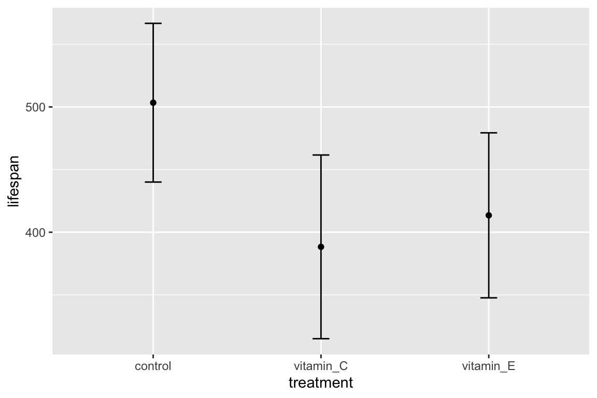
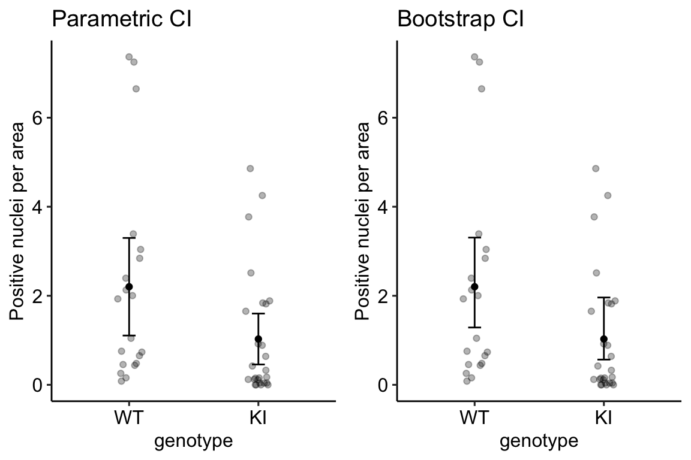

- Preface
- Part I: Getting Started
- 1 Getting Started – R Projects and R Markdown
- Part II: An introduction to the analysis of experimental data with a linear model
- 2 Analyzing experimental data with a linear model
- Background physiology to the experiments in Figure 2 of “ASK1 inhibits browning of white adipose tissue in obesity”
- Analyses for Figure 2 of “ASK1 inhibits browning of white adipose tissue in obesity”
- 2.2 Setup
- 2.3 Data source
- 2.4 control the color palette
- 2.5 useful functions
- 2.6 figure 2b – effect of ASK1 deletion on growth (body weight)
- 2.7 Figure 2c – Effect of ASK1 deletion on final body weight
- 2.7.1 Figure 2c – import
- 2.7.2 Figure 2c – check own computation of weight change v imported value
- 2.7.3 Figure 2c – exploratory plots
- 2.7.4 Figure 2c – fit the model: m1 (lm)
- 2.7.5 Figure 2c – check the model: m1
- 2.7.6 Figure 2c – fit the model: m2 (gamma glm)
- 2.7.7 Figure 2c – check the model, m2
- 2.7.8 Figure 2c – inference from the model
- 2.7.9 Figure 2c – plot the model
- 2.7.10 Figure 2c – report
- 2.8 Figure 2d – Effect of ASK1 KO on glucose tolerance (whole curve)
- 2.9 Figure 2e – Effect of ASK1 deletion on glucose tolerance (summary measure)
- 2.10 Figure 2f – Effect of ASK1 deletion on glucose infusion rate
- 2.11 Figure 2g – Effect of ASK1 deletion on tissue-specific glucose uptake
- 2.12 Figure 2h
- 2.13 Figure 2i – Effect of ASK1 deletion on liver TG
- 2.14 Figure 2j
- Part III: R fundamentals
- 3 Data – Reading, Wrangling, and Writing
- 4 Plotting Models
- Part IV: Some Fundamentals of Statistical Modeling
- 5 Variability and Uncertainty (Standard Deviations, Standard Errors, Confidence Intervals)
- 6 P-values
- 6.1 A p-value is the probability of sampling a value as or more extreme than the test statistic if sampling from a null distribution
- 6.2 Pump your intuition – Creating a null distribution
- 6.3 A null distribution of t-values – the t distribution
- 6.4 P-values from the perspective of permutation
- 6.5 Parametric vs. non-parametric statistics
- 6.6 frequentist probability and the interpretation of p-values
- 6.7 Some major misconceptions of the p-value
- 6.7.1 Misconception: p is the probability that the null is true and \(1-p\) is probability that the alternative is true
- 6.7.2 Misconception: a p-value is repeatable
- 6.7.3 Misconception: 0.05 is the lifetime rate of false discoveries
- 6.7.4 Misconception: a low p-value indicates an important effect
- 6.7.5 Misconception: a low p-value indicates high model fit or high predictive capacity
- 6.8 What the p-value does not mean
- 6.9 Recommendations
- 6.10 Problems
- 7 Errors in inference
- Part V: Introduction to Linear Models
- 8 An introduction to linear models
- 8.1 Two specifications of a linear model
- 8.2 A linear model can be fit to data with continuous, discrete, or categorical \(X\) variables
- 8.3 Statistical models are used for prediction, explanation, and description
- 8.4 What do we call the \(X\) and \(Y\) variables?
- 8.5 Modeling strategy
- 8.6 Predictions from the model
- 8.7 Inference from the model
- 8.8 “linear model,”regression model“, or”statistical model"?
- 9 Linear models with a single, continuous X
- 9.1 A linear model with a single, continuous X is classical “regression”
- 9.1.1 Analysis of “green-down” data
- 9.1.2 Learning from the green-down example
- 9.1.3 Using a regression model for “explanation” – causal models
- 9.1.4 Using a regression model for prediction – prediction models
- 9.1.5 Using a regression model for creating a new response variable – comparing slopes of longitudinal data
- 9.1.6 Using a regression model for for calibration
- 9.2 Working in R
- 9.2.1 Fitting the linear model
- 9.2.2 Getting to know the linear model: the
summaryfunction - 9.2.3 Inference – the coefficient table and Confidence intervals
- 9.2.4 How good is our model? – Model checking
- 9.2.5 Plotting models with continuous X
- 9.2.6 Creating a table of predicted values and 95% prediction intervals
- 9.3 Hidden code
- 9.4 Try it
- 9.5 Intuition pumps
- 9.1 A linear model with a single, continuous X is classical “regression”
- 10 Linear models with a single, categorical X
- 11 Model Checking
- 12 Model Fitting and Model Fit (OLS)
- 13 Best practices – issues in inference
- Part VI: More than one \(X\) – Multivariable Models
- 14 Adding covariates to a linear model
- 14.1 Adding covariates can increases the precision of the effect of interest
- 14.2 Understanding a linear model with an added covariate – heart necrosis data
- 14.3 Understanding interaction effects with covariates
- 14.4 Understanding ANCOVA tables
- 14.5 Working in R
- 14.6 Best practices
- 14.7 Best practices 2: Use a covariate instead of normalizing a response
- 15 Two (or more) Categorical \(X\) – Factorial designs
- 15.1 Factorial experiments
- 15.1.1 Model coefficients: an interaction effect is what is leftover after adding the treatment effects to the control
- 15.1.2 What is the biological meaning of an interaction effect?
- 15.1.3 The interpretation of the coefficients in a factorial model is entirely dependent on the reference…
- 15.1.4 Estimated marginal means
- 15.1.5 In a factorial model, there are multiple effects of each factor (simple effects)
- 15.1.6 Marginal effects
- 15.1.7 The additive model
- 15.1.8 Reduce models for the right reason
- 15.1.9 What about models with more than two factors?
- 15.2 Reporting results
- 15.3 Working in R
- 15.4 Problems
- 15.1 Factorial experiments
- 16 ANOVA Tables
- 17 Predictive Models
- Part VII – Expanding the Linear Model
- 18 Models with random effects – Blocking and pseudoreplication
- 18.1 Random effects
- 18.2 Random effects in statistical models
- 18.3 Linear mixed models are flexible
- 18.4 Blocking
- 18.5 Pseudoreplication
- 18.6 Mapping NHST to estimation: A paired t-test is a special case of a linear mixed model
- 18.7 Advanced topic – Linear mixed models shrink coefficients by partial pooling
- 18.8 Working in R
- 19 Models for longitudinal experiments – pre-post designs
- 19.1 Best practice models
- 19.2 Common alternatives that are not recommended
- 19.3 Advanced models
- 19.4 Understanding the alternative models
- 19.4.1 (M1) Linear model with the baseline measure as the covariate (ANCOVA model)
- 19.4.2 (M2) Linear model of the change score (change-score model)
- 19.4.3 (M3) Linear model of post-baseline values without the baseline as a covariate (post model)
- 19.4.4 (M4) Linear model with factorial fixed effects (fixed-effects model)
- 19.4.5 (M5) Repeated measures ANOVA
- 19.4.6 (M6) Linear mixed model
- 19.4.7 (M7) Linear model with correlated error
- 19.4.8 (M8) Constrained fixed effects model with correlated error (cLDA model)
- 19.4.9 Comparison table
- 19.5 Example 1 – a single post-baseline measure (pre-post design)
- 19.6 Working in R
- 20 Generalized linear models I: Count data
- 20.1 The generalized linear model
- 20.2 Count data example – number of trematode worm larvae in eyes of threespine stickleback fish
- 20.2.1 Modeling strategy
- 20.2.2 Checking the model I – a Normal Q-Q plot
- 20.2.3 Checking the model II – scale-location plot for checking homoskedasticity
- 20.2.4 Two distributions for count data – Poisson and Negative Binomial
- 20.2.5 Fitting a GLM with a Poisson distribution to the worm data
- 20.2.6 Model checking fits to count data
- 20.2.7 Fitting a GLM with a Negative Binomial distribution to the worm data
- 20.3 Working in R
- 20.4 Problems
- 21 Linear models with heterogenous variance
- Part V: Expanding the Linear Model – Generalized Linear Models and Multilevel (Linear Mixed) Models
- 22 Plotting functions (#ggplotsci)
- Appendix 1: Getting Started with R
- Appendix 2: Online Resources for Getting Started with Statistical Modeling in R
- Appendix 3: Fake Data Simulations
3.3 Data wrangling
Data archived in Excel spreadsheets, at least in wet-bench experimental biology projects, are generally not in a format this is readily analyzed in R, or any statistical software other than perhaps Graphpad Prism. Use these examples as templates for how to import and wrangle Excel-archived data in your project.
3.3.1 Reshaping data – Wide to long
3.3.1.1 Wide to long – Adipsin data
Public source – the Adipsin paper is behind a paywall. A public source of the paper from NIH is available.

Fig. 1k of the Adipsin paper presents a bar plot of the glucose uptake in response to control (GFP) or adipsin treatment. A screenshot of the Excel-archived data is shown above. The data are in wide format. In wide-format, the values of a single variable (here, this is glucose uptake level) are given in separate columns for each treatment level (group). The values for the GFP group are in Column A and the values for the Adipsin group are in Column B. Wide format is efficient for computations in a spreadsheet, such as computing means and standard deviations of columns of data, and for plotting.
For most statistical analyses of experimental data in R (and most statistics software), all values of a single variable should be in a single column. This is called long format. I’ve manually rearranged the data from the archived spread sheet into long format by stacking each group’s values into a single column, shown in the screen capture below. All values of glucose uptake are in a single column. In long format, there needs to be a way to identify which values belong to which group and this is achieved here with column “treatment”. In adition to the treatment column.

The difference between wide and long also reflects how we think about statistical analysis. When we do a t-test to compare the means of glucose uptake between GFP and Adipsin groups, we might think we have two things: the set of glucose uptake values for the GFP group and the set of values for the Adipsin group. When we fit a linear model, we also have two things, the variable treatment containing treatment level assignment and the variable glucose_uptake containing the glucose uptake values. In wide format, there is nothing to suggest that treatment is a variable.
There are many functions to tidy data from wide to long. melt from the data.table package is especially useful. It is data.table’s version of melt from the reshape2 package.
The major arguments of data.table::melt are
melt(data, id.vars, measure.vars, variable.name, value.name)
melt takes the data in the columns listed in measure.vars and stacks these into a single column named value.name. The names of the columns in measure.vars are the values of the elements in a new column named variable.name. The elements of any column in id.vars are repeated p times, where p is the number of columns that were stacked.
Let’s melt the three different response variables of the adipsin data and merge them into a single data.table. There are several ways to combine data sets including merge and cbind. We’ll compare these later.
file_folder <- "Adipsin preserves beta cells in diabetic mice and associates with protection from type 2 diabetes in humans"
fn <- "41591_2019_610_MOESM3_ESM.xlsx"
file_path <- here(data_folder, file_folder, fn)
treatment_levels <- c("db/db-GFP", "db/db-Adipsin")
# as separate line
fig_1k_wide <- read_excel(file_path,
sheet = "Figure 1k",
range = "A3:B9")
fig_1k_wide <- data.table(fig_1k_wide)
fig_1k <- melt(fig_1k_wide,
measure.vars = treatment_levels,
variable.name = "treatment",
value.name = "glucose_uptake")
# or piped -- which do you prefer?
fig_1k <- read_excel(file_path,
sheet = "Figure 1k",
range = "A3:B9") %>%
data.table() %>%
melt(measure.vars = treatment_levels,
variable.name = "treatment",
value.name = "glucose_uptake")
# View(fig_1k) # highlight without the comment sign and "run selected lines()" to viewA pretty-good-plot using the ggpubr package
# put warning=FALSE into the chunk header to supress the warning
gg <- ggstripchart(x = "treatment",
y = "glucose_uptake",
add = "mean_se",
data = fig_1k)
gg
3.3.1.2 Wide to long – Enteric nervous system data
Let’s import and reshape the data for figure 2d. Look at the excel file and the data in Fig. 2d. There is a single treament with four levels, but the authors have organized the data in each level in separate columns and used the column header as the level name.

Let’s melt the data from wide to long by stacking the four columns into a single column “neutrophil_count” and adding a treatment column identifying the group.
folder <- "The enteric nervous system promotes intestinal health by constraining microbiota composition"
filename <- "journal.pbio.2000689.s008.xlsx"
file_path <- here(data_folder, folder, filename)
# figure 2D data
sheet_i <- "Figure 2"
range_i <- "F2:I24"
fig_2d_wide <- read_excel(file_path, sheet=sheet_i, range=range_i) %>%
clean_names() %>%
data.table()
# change column names by replacing without "_donor" in each name
# these new column names will become the levels of the treatment factor
new_colnames <- c("gf", "wt", "sox10", "iap_mo")
setnames(fig_2d_wide, old=colnames(fig_2d_wide), new=new_colnames)
# wide to long
fig_2d <- melt(fig_2d_wide,
measure.vars=colnames(fig_2d_wide),
variable.name="treatment",
value.name="neutrophil_count")
# omit empty rows
fig_2d <- na.omit(fig_2d)
# re-order factors
fig_2d[, treatment := factor(treatment,
levels = c("wt", "gf", "sox10", "iap_mo"))]
# View(fig_2d)To learn (instead of just copy and modify), it’s best to do this in steps and not run the whole chunk. At each step, look at the result using View. The script above includes three extra wrangling steps.
Changing column names in fig_2d_wide. The column names in wide format will become the treatment level names of the treatment factor after reshaping. It will be easier down the road if these names are shorter and the "_donor" in each name is redundant. The
setnamesfunction renames the column names.For these data, the number of measures within the different treatments differs and, as a consequence, there are multiple cells with
NAwhich indicates a missing value.View(fig_2d_wide)(this can be typed in the console) to see this. After reshaping to long format (fig_2d), the rows with missing values become empty rows – there is no useful information in them (View this). To see this, re-run the lines of the chunk up to the line “# omit empty rows”. Thena.omitfunction deletes any row with missing values. Here, this deletes these information-less rows. Be very careful withna.omit. You do not want to delete rows of data that contain information you want.For both analysis and plots, we want to compare values to the control level, which is named “wt” for the fig_2d data. That is, we want “wt” to be the reference level. To achieve this, the levels of the factor treatment need to be re-ordered using the
levelsargument. (note, I typically do not add “levels =”, but simply pass the list of levels)
3.3.1.3 Wide to long – bee data
The example above is pretty easy, because the all columns in the original data frame are melted (stacked). Here is an example in which only a subset of columns are stacked. In addition, only a subset of the remaining columns are retained in the long format data frame. The data are from Panel A of supplement Fig. 8 (https://journals.plos.org/plosbiology/article/file?type=supplementary&id=info:doi/10.1371/journal.pbio.2003467.s019) from
folder <- "Data from Disentangling metabolic functions of bacteria in the honey bee gut"
filename <- "journal.pbio.2003467.s001.xlsx"
# figure 2D data
sheet_i <- "S8 Fig"
range_i <- "A2:H12"
file_path <- here(data_folder, folder, filename)
fig_s8a_wide <- read_excel(file_path,
sheet=sheet_i,
range=range_i) %>%
clean_names() %>%
data.table()
# wide to long
stack_cols <- paste0("replicate", 1:5)
fig_s8a <- melt(fig_s8a_wide,
id.vars = c("media", "time_h"),
measure.vars = stack_cols,
variable.name = "Replicate",
value.name = "OD600") # measure of absorbance at 600nm3.3.1.4 Wide to long – stacking multiple sets of columns
This example comes from my lab, where a student measured sprint speed in each fish three times prior to treatment and three times following treatment. The wide format data looked something like this
set.seed(1)
fd_wide <- data.table(fish_ID=paste0("fish",1:4),
treatment=rep(c("cn", "tr"), each=2),
length=rnorm(4, 12, 2),
pre_1=rnorm(4, 50, 5),
pre_2=rnorm(4, 50, 5),
pre_3=rnorm(4, 50, 5),
post_1=rnorm(4, 50, 5),
post_2=rnorm(4, 50, 5),
post_3=rnorm(4, 50, 5)
)
knitr::kable(fd_wide, digits=1)| fish_ID | treatment | length | pre_1 | pre_2 | pre_3 | post_1 | post_2 | post_3 |
|---|---|---|---|---|---|---|---|---|
| fish1 | cn | 10.7 | 51.6 | 52.9 | 46.9 | 49.9 | 54.6 | 53.1 |
| fish2 | cn | 12.4 | 45.9 | 48.5 | 38.9 | 54.7 | 53.9 | 49.7 |
| fish3 | tr | 10.3 | 52.4 | 57.6 | 55.6 | 54.1 | 50.4 | 49.2 |
| fish4 | tr | 15.2 | 53.7 | 51.9 | 49.8 | 53.0 | 40.1 | 42.6 |
To analyze the response (post-treatment sprint) adjusted for pre-treatment sprint, the three pre-treatment sprint measures need to be stacked into a single column and the three post-treatment measures need to be stacked into a single column. This is easy using melt from the data.table package.
pre_cols <- paste("pre", 1:3, sep="_")
post_cols <- paste("post", 1:3, sep="_")
fd <- melt(fd_wide,
id.vars=c("fish_ID", "treatment", "length"),
measure.vars=list(pre_cols, post_cols),
variable.name="Order",
value.name=c("sprint_pre", "sprint_post"))
knitr::kable(fd, digits=1)| fish_ID | treatment | length | Order | sprint_pre | sprint_post |
|---|---|---|---|---|---|
| fish1 | cn | 10.7 | 1 | 51.6 | 49.9 |
| fish2 | cn | 12.4 | 1 | 45.9 | 54.7 |
| fish3 | tr | 10.3 | 1 | 52.4 | 54.1 |
| fish4 | tr | 15.2 | 1 | 53.7 | 53.0 |
| fish1 | cn | 10.7 | 2 | 52.9 | 54.6 |
| fish2 | cn | 12.4 | 2 | 48.5 | 53.9 |
| fish3 | tr | 10.3 | 2 | 57.6 | 50.4 |
| fish4 | tr | 15.2 | 2 | 51.9 | 40.1 |
| fish1 | cn | 10.7 | 3 | 46.9 | 53.1 |
| fish2 | cn | 12.4 | 3 | 38.9 | 49.7 |
| fish3 | tr | 10.3 | 3 | 55.6 | 49.2 |
| fish4 | tr | 15.2 | 3 | 49.8 | 42.6 |
3.3.2 Reshaping data – Transpose (turning the columns into rows)
3.3.2.1 Transpose – PI3K inhibitors data
Source: Suppression of insulin feedback enhances the efficacy of PI3K inhibitors
Figure 3A of this publication is a plot of blood glucose level taken on the same individual mice from four treatment groups over six time periods. Data on a single variable such as blood glucose, taken on the same individual at multiple time points, are known as longitudial data but are often mistakenly called repeated measures data. There are mulitple ways to analyze longitudinal data, some goood, some less good. There are two reasonable ways to archive longitudinal data for analysis in R. The Excel-archived data for Figure 3A is neither. A screen capture of two of the four treatment groups is shown below.

In the archived data the individual mice are in columns. The measure at each time point is in rows. And the treatment group is in blocks. Typical data for analysis in R should have the individual mice in rows and each variable in columns (an exception in experimental biology is omics data, such as RNA expression levels. Many packages with functions to analyze these data have the genes on each row and the individual on each column). The Figure 3A data are turned on its side. We need to transpose the data, or rotate the matrix 90 degrees (make the columns rows and the rows columns) to turn the data into wide format. From this we can create a new data.table with the data in long format.
folder <- "Suppression of insulin feedback enhances the efficacy of PI3K inhibitors"
filename <- "41586_2018_343_MOESM6_ESM.xlsx"
file_path <- here(data_folder, folder, filename)
pi3k_side <- read_excel(file_path,
sheet = "Figure 3A (Blood Glucose)",
range = "A2:U7",
col_names = FALSE) %>%
data.table()
# give columns names as the treatment of each mouse
# verify n=5 per group
treatment_levels <- c("Chow", "Ketogenic", "Metformin", "SGLT2i")
colnames(pi3k_side) <- c("time",
rep(treatment_levels, each = 5))
# transpose
# keep colnames in "side" as values of treatment col in "wide"
# make values of "time" in "side" the colnames in "wide"
pi3k_wide <- transpose(pi3k_side,
keep.names = "treatment",
make.names = "time")
# make a baseline column
pi3k_wide[, glucose_0 := get("0")]
# make-up a mouse id for each mouse
pi3k_wide[, id := paste(treatment, 1:.N, sep = "_"), by = treatment]
# make treatement a factor with "chow" as reference
pi3k_wide[, treatment := factor(treatment, treatment_levels)]
# make a long version
pi3k_long <- melt(pi3k_wide,
id.vars = c("treatment", "id", "glucose_0"),
variable.name = "time",
value.name = "glucose")Notes
- Read the comments on the usage of the
keep.namesandmake.namesarguments oftranspose. These are powerful. - pi3k_wide has column names that are times (in minutes). This presents wrangling problems (column names shouldn’t be numbers. Here it is useful to create the long format data.table with a time column of numbers). For example, the code above creates copies the column “0” into a new column “glucose_0” using
glucose_0 := get("0"). Had the code beenglucose_0 := "0", all values would be the character “0”. Had the code beenglucose_0 := 0, all values would be the number 0.getlooks for the column with the name of whatever is inside the parentheses.
Let’s do a quick plot to examine the data

3.3.3 Combining data
The data are from a randomized crossover design where 18 men (9 lean and 9 obese) were measured for multiple metabolic markers at two times: 1) in a post-absorptive state after 12 hours overnight fast, and 2) in a prolonged fasting state after 72 hours of fasting. In addition, at each time point, metabolic markers were measured prior to and after an insulin infusion. Here, we want to reproduce values in Table 2, which are measures of mean blood insulin and metabolite levels after 12 hours and 72 hours fasting in both the lean and obese groups.
A difficulty for the analyst is that the response data are in the “Table 2” sheet but the variable containing the assignment to “lean” or “obese” group is in the “Table 1” sheet. To analyze these response, the two datasets need to be combined into a single data frame. The important consideration when combining data is that like is matched with like. For the fasting dataset, “like” is the subject id, and we have some data for each subject id in Table 1 and other data for the same subject ids in Table 2. This means that we essentially want to glue the columns of table 2 to the columns of table 1 in a way that insures that the correct data for each subject id is on the same row. This is a bit more complicated for these data because Table 1 contains 18 data rows, one for each subject id and Table 2 contains 36 data rows, 2 for each subject id, because each subject has data measured at 12 hours and at 72 hours.
3.3.4 Subsetting data
It is common to see researchers create multiple subsets of data for further processing. This practice should be be discouraged because the same variables will be in multiple data frames and it can be hard to keep track of any processing of variables in the different datasets. Instead, subset the data at the level of analysis.
There are many ways to subset data in R. Experienced users tend to divide up into those using base R, those using the tidyverse packages, or those using data.table. Learn one well. This book uses data.table. Before outlining usage in data.table, let’s back up a bit and review different indexing systems.
- In Excel, rows are specified (or “indexed”) by numbers and columns by letters. Every cell has an address, for example C2 is the cell in the 2nd row and 3rd column. Notice that in Excel, the column part of the address comes before the row part.
- In statistics, it is extremely common to use a system where \(x_{ij}\) is the value of the element in the ith row and jth column of the matrix X. Notice that in this notatin, the row index (i) comes before the column index (j).
- In programming languages, including R, it is extremely common to use a system where my_data[i, j] is the value of the element in the ith row and jth column of the matrix-like object named “my_data” (such as a data frame in R).
- data.table explicitly refers to the row index and column index as i and j.
3.3.4.1 Specifying a subset of rows (“observations” or “cases”)
A subset of rows is specified using either a list of row numbers or
In a data.table, a subset of rows is specified using either a list of row numbers or a combination of comparison operators (==, !=, >, <, >=, <=, %in%) and Boolean logic operators (&, |, ! – these are “and”, “or”, “not”) as i.
Let’s use the pi3k_long data from above to explore this. First, the plot of plasma glucose for all individuals in each treatment group across all time points.

pi3k_long[treatment == "Chow",]) is the subset of rows in which entries in the column “treatment” take the value “Chow” using the “is equal” (“==”) operator
qplot(x = time,
y = glucose,
data = pi3k_long[treatment == "Chow",],
color = treatment) +
geom_line(aes(group = id))
And the subset of rows in which entries in the column “treatment” take any value but “Chow” using the “not equal” operator (“!=”).
qplot(x = time,
y = glucose,
data = pi3k_long[treatment != "Chow",],
color = treatment) +
geom_line(aes(group = id))
The subset of rows in which entries in the column “treatment” take either the value “Chow” or the value “SGLT2i” by combining two “is equal” (“==”) operators using the OR (“|”) boolean operator
qplot(x = time,
y = glucose,
data = pi3k_long[treatment == "Chow" | treatment == "SGLT2i",],
color = treatment) +
geom_line(aes(group = id))The subset of rows in which entries in the column “time” take either the value “30” or the value “60” using the “in a list” operator (%in%). The values in the “time” column look like integers but are actually treatment levels (which act like string or character variables).
qplot(x = time,
y = glucose,
data = pi3k_long[time %in% c("30", "60"),],
color = treatment) +
geom_line(aes(group = id))The subset of rows in which entries in the column “time_c” are less than or equal to 60 using the “less than or equal to” operator AND the value in the treatment column is in the list (“Chow”, “SGLT2i”). The two comparisons are combined with the AND (“&”) Boolean operator.
pi3k_long[, time_c := as.numeric(as.character(time))]
qplot(x = time,
y = glucose,
data = pi3k_long[time_c <= 30 & treatment %in% c("Chow", "SGLT2i"),],
color = treatment) +
geom_line(aes(group = id))The same result as above but using different operators. I would describe this as, the subset of rows in which entries in the column “time_c” are less than or equal to 60 using the “less than or equal to” operator AND the value in the treatment column is either “Chow” OR “SGLT2i”. The two comparisons are combined with the AND (“&”) Boolean operator. The order of operations is determined by the parentheses, as with all algebra.
pi3k_long[, time_c := as.numeric(as.character(time))]
qplot(x = time,
y = glucose,
data = pi3k_long[time_c <= 30 & (treatment == "Chow" | treatment == "SGLT2i"),],
color = treatment) +
geom_line(aes(group = id))
3.3.5 Wrangling columns
3.3.5.1 Creating new columns that are functions of values in existing columnes
3.3.5.2 Change the reference level of a factor
3.3.5.3 Converting a single column with all combinations of a 2 x 2 factorial experiment into two columns, each containing the two levels of a factor
Source: Tauriello, D., Palomo-Ponce, S., Stork, D. et al. TGFβ drives immune evasion in genetically reconstituted colon cancer metastasis. Nature 554, 538–543 doi:10.1038/nature25492
filename: “41586_2018_BFnature25492_MOESM10_ESM.xlsx”
sheet: “Fig. 4h-tumours”
The analysis of the data in Fig. 4h specifies a single \(X\) variable “Treatment” with four levels (or groups): “Con”, “Gal”, “aPD-L1”, and “Gal+aPD-L1”. These levels indicate that the design is actually factorial with two factors, each with two levels. The first factor has levels “no Gal” and “Gal”. The second factor has levels “no aPD-L1”, “aPD-L1”. The single column Treatment “flattens” the 2 X 2 factorial design to a 4 x 1 design. In general, we would want to analyze an experiment like this as factorial model, because this allows us to make inferences about the interaction effect between the two factors. For these inferences, we need a standard error, or a confidence interval, or a p-value of the estimate, which we can easily get from the factorial model. In order to analyze the data with a factorial model, we need to create two new columns – one column is the factor variable containing the two levels of Gal and one column is the factor variable containing the two levels of aPD-L1.
gal_levels <- c("no Gal", "Gal")
tumor[, gal := ifelse(treatment == "Gal" | treatment == "Gal+aPD-L1",
gal_levels[2],
gal_levels[1])]
apd_levels <- c("no aPD-L1", "aPD-L1")
tumor[, apdl1 := ifelse(treatment == "aPD-L1" | treatment == "Gal+aPD-L1",
apd_levels[2],
apd_levels[1])]
# re-order factor levels
tumor[, gal:=factor(gal, gal_levels)]
tumor[, apdl1:=factor(apdl1, apd_levels)]A way to check the results to make sure that our conversion is correct is to compute the sampel size for the 2 x 2 combinations, but include the original treatment column in the by list.
## treatment gal apdl1 N
## 1: Con no Gal no aPD-L1 124
## 2: Gal Gal no aPD-L1 89
## 3: aPD-L1 no Gal aPD-L1 101
## 4: Gal+aPD-L1 Gal aPD-L1 58That looks good.
Bug alert If you break Rule #1, and type in the treatment level “Gal+aPD-L1” as “Gal + aPD-L1”, then you will get new columns containing junk.
## treatment gal apdl1 N
## 1: Con no Gal no aPD-L1 124
## 2: Gal Gal no aPD-L1 89
## 3: aPD-L1 no Gal aPD-L1 101
## 4: Gal+aPD-L1 no Gal no aPD-L1 58Remember Rule #1. Always copy and paste any text that will be inserted into quotes. This is easily done here by typing unique(tumor$treatment) into the console. This function returns the unique values of the column “treatment” of the data.table “tumor”.
unique(tumor$treatment) [1] “Con” “Gal” “aPD-L1” “Gal+aPD-L1”
Now, copy the name of a level and paste into your code. Repeat until done.
3.3.6 Missing data
Supplement Figure 1F of this paper shows weight as a function of age class and genotype for the whole body and 8 organs. There are some missing weights in the Excel-archived data. These missing data are designated with a minus “-” sign. To import these data in correctly, use the na = argument in the read_excel function.
file_folder <- "Deletion of Cdkn1b in ACI rats leads to increased proliferation and pregnancy-associated changes in the mammary gland due to perturbed systemic endocrine environment"
file_name <- "journal.pgen.1008002.s008.xlsx"
file_path <- here(data_folder, file_folder, file_name)
fig_s1f <- read_excel(file_path,
sheet = "all weights",
range = "A2:K57",
na = "-",
col_names = TRUE) %>%
clean_names() %>%
data.table()
fig_s1f[, genotype := factor(genotype, c("+/+", "-/-"))]
fig_s1f[, age_class := ifelse(age_at_sac_wks <= 6.0, "4-6", "8+")]
# View(fig_s1f)Notes
- In R, a value of “NA” represents missing.
- The default value for
na =is an empty (or blank) cell (not a space but a cell that is empty). na =accepts a list of strings, for examplena = c("", "-99", "--")that will all be read as na.
3.3.6.1 Handling missing data
3.3.6.1.1 Many base R functions used for summary measures require NA handling
## [1] NA## [1] 0.2489524## [1] NA## [1] 0.151694## [1] NA## [1] 10.456There are many ways to get the sample size for a particular variable. Be careful if using length() which counts NA as part of the vector of values.
3.3.6.1.2 The !is.na function is useful
## [1] 55## [1] 42Notes
!is.na(ovary)is taking the subset of rows of fig_s1f for which the value of “ovary” is not NA (!is.na is read “not is.na”)
This is especially useful if you are creating your own code uses counts. Here I create a table of means, standard error of the mean, and 95% CIs of the mean for each genotype group. But first, this script generates the wrong N for each group (since there are missing values), although the mean and SD are correct.
fig_s1f[, .(mean = mean(spleen, na.rm = TRUE),
n = .N,
sd = sd(spleen, na.rm = TRUE)),
by = genotype]## genotype mean n sd
## 1: -/- 0.5801333 21 0.13680480
## 2: +/+ 0.2956667 34 0.04460855To compute the correct n, which will be necessary for computing the SE and the CI, use !is.na
spleen_summary <- fig_s1f[!is.na(spleen), .(mean = mean(spleen),
n = .N,
sd = sd(spleen)),
by = genotype]
spleen_summary[, se := sd/sqrt(n)]
spleen_summary[, lower := mean + se*qt(.025, (n-1))]
spleen_summary[, upper := mean + se*qt(.975, (n-1))]
spleen_summary## genotype mean n sd se lower upper
## 1: -/- 0.5801333 15 0.13680480 0.03532285 0.5043734 0.6558933
## 2: +/+ 0.2956667 27 0.04460855 0.00858492 0.2780201 0.31331323.3.6.1.3 ggplot functions automatically handle missing values
with a useful warning.

3.3.6.1.4 Regression model functions (lm, glm, gls, etc.) handle missing values by default
Missing data in regression model functions such as lm are handled using the argument na.action = and the default is “na.omit”, which omits any rows that contain a missing value in one or more of the model variables (it includes rows if these contain missing values only in the columns not included in the model). It’s as if the user took the subset of data including only the columns containing the model variables and then deleted any row with missing values.
Here is the coefficient table of the fit model object that did not explictly tell the lm function how to handle missing data.
## Estimate Std. Error t value Pr(>|t|)
## (Intercept) 0.04238009 0.0242993900 1.744081 8.902319e-02
## body_wt_g_sac 0.00167493 0.0001506493 11.118067 1.170042e-13
## genotype-/- 0.23760586 0.0147600545 16.097898 8.072069e-19Here is the coefficient table of the fit model object that did explicitly tell lm how to handle missing data, using the argument na.action = "na.exclude". These coefficient tables are the same.
m2 <- lm(spleen ~ body_wt_g_sac + genotype,
data = fig_s1f,
na.action = "na.exclude")
coef(summary(m2))## Estimate Std. Error t value Pr(>|t|)
## (Intercept) 0.04238009 0.0242993900 1.744081 8.902319e-02
## body_wt_g_sac 0.00167493 0.0001506493 11.118067 1.170042e-13
## genotype-/- 0.23760586 0.0147600545 16.097898 8.072069e-193.3.6.2 But…beware of fitted, predicted, or residual values from regression model functions unless you’ve explictly told the function how to handle missing values
Use na.action = "na.exclude" if you want to add the fitted (or predicted) values or residuals as new columns in the original data object (fig_sf1). Compare the length of the fitted values vector from models m1 (using the default “na.omit”) and m2 (using the “na.exclude”).
## [1] 42## [1] 55There are 55 observations (rows in the data) but only 42 complete rows with no missing values. The vector of fitted values from m1 has 42 fitted values. The vector of fitted values from m2 has 55 elements, the 42 fitted values plus 13 NA elements.
This is important if we want to do something like add the fitted values (or residuals, or some function of these) to the original data object (fig_sf1). Here I compute the spleen weights adjusted to the mean body weight of the control (“+/+”) group using the residuals from m1 and m2.
mean_x_control <- mean(fig_s1f[genotype == "+/+", body_wt_g_sac])
b <- coef(m1)
fig_s1f[, spleen_adj_m1 := b[1] +
b[2]*mean_x_control +
b[3]*(as.integer(genotype)-1 +
residuals(m1))]
fig_s1f[, spleen_adj_m2 := b[1] +
b[2]*mean_x_control +
b[3]*(as.integer(genotype)-1 +
residuals(m2))]
# View(fig_s1f)The computation of “spleen_adj_m1” returns a warning that the values of residuals(m1) were recycled (the first 42 elements of the new column were filled with the 42 residuals and the last 13 elements of the new column were filled with the first 13 residuals) – after the first row of missing data, all of these computed adjusted values are wrong. Using residuals(m2), the adjusted values are matched to the correct row and the rows with missing variables do not have an adjusted value (because there is no residual to compute this).